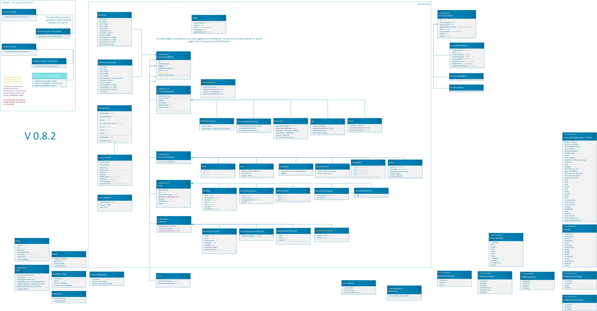

Architecture¶
{kind=link}
On the figure above, arrows point from an object 1 to object 2, where object 1 inherits from object 2.
The figure is also work-in-progress. The outline titled “mostly fixed” houses the objects that have been implemented and used. These will hopefully see only minor adjustments. Objects outside this area might end up being standardised differently than currently suggested.
All fields are optional unless otherwise specified, or unless required to construct specific object.
Where the same attribute is being called in parent and child (e.g. axis being referenced in ply, and in some of corresponding cut pieces), the more detailed (child) component supersedes the corresponding parent definition.
CompositeDB object is the main object of the Composite Standard. All objects are stored in lists named all***.
- CompositeStandard.CompositeDB(BaseModel)¶
All elements and all geometry are all stored here and used elsewhere as refrence Points are stored withing those, as referencing is not efficient
BaseModel input signifies the default generation with Pydantic library, without any local parent.
- Parameters:
name – str - name
rootElements – list - List of CompositeElement type objects
allEvents – list - List of “events” objects - all = exhaustive list
allGeometry – list - list of “GeometricElement” objects - all = exhaustive list
allStages – list - manuf process - all = exhaustive list
allMaterials – list - List of “Material” objects - all = exhaustive list
fileMetadata – object - list of all “axisSystems” objects = exhaustive list
- CompositeStandard.FileMetadata(BaseModel)¶
Metadata related to this particular part.
- Parameters:
lastModified – date
lastModifiedBy – str - latest changes to the file have been done by
author – str - initial part definition created by
version – str - version of the CompoST used to work with this file
layupDefinitionVersion – str - initial part layup definition generated by
cadFile – str - related CAD file, if references to geometries are required, .step format is recommended. Should be stored in same folder.
maxID – int - maxium ID used for any object int the file, used for preventing duplicaiton of IDs
cadFilepath – str - should only be used when CAD could not be stored in same folder as this file
- CompositeStandard.CompositeDBItem(BaseModel)¶
- Parameters:
memberName – str - name
additionalParameters – dict - to hold use-case specific values (to be further defined)
additionalProperties – dict - to hold use-case specific objects (to be further defined)
stageIDs – (TODO) - stages will define what part of part-processing this object came from
batchIDs – (TODO) - reference to batch of components
ID – int - used for references between objects
- CompositeStandard.GeometricElement(CompositeDBItem)¶
- Parameters:
source – str - the software, script, or database that this object originated from
- CompositeStandard.CompositeElement(CompositeDBItem)¶
This includes any object that is used to describe composite component specifically.
- Parameters:
database – object -
get()subComponent – list -
get(), either as object or IDmappedProperties – dict - other properties not covered by materials class or similar
mappedRequirements – list - list of objects of Requirement type, to be further specified
defects – list - list of “defects” type objects
axisSystemID – int - refernce to object in allAxisSystems specified by ID
referencedBy – list - optional list of objects that currently reference this object
status – str - #TODO
- CompositeStandard.Point(GeometricElement)¶
- Parameters:
x – float
y – float
z – float
- CompositeStandard.Line(GeometricElement)¶
- Parameters:
points – list - list of two points , no more - no less
IDs – list - list of two IDs corresponding to points, no more - no less
- CompositeStandard.AxisSystem(GeometricElement)¶
The three vectors listed bewow must be perpendicular to each other
- Parameters:
pt – CompositeStandard.Point - location of axis system expressed in global axis system
v1x – float - first vector of axis system, first direction
v1y – float - first vector of axis system, second direction
v1z – float - first vector of axis system, third direction
v2x – float - second vector of axis system, first direction
v2y – float - second vector of axis system, second direction
v2z – float - second vector of axis system, third direction
v3x – float - third vector of axis system, first direction
v3y – float - third vector of axis system, second direction
v3z – float - third vector of axis system, third direction
- CompositeStandard.Material(BaseModel)¶
To be expanded…
User of the format is responsible for using consistent units. CompoST does not enforce units used.
- Parameters:
materialName – str
E1 – float - young’s modulus in primary direction
E2 – float - young’s modulus in secondary direction (in-plane)
G23 – float - shear modulus
G12 – float - interlaminar shear modulus
v12 – float - poisson ratio in plane
infoSource – str - reference to source of the information
thickness – float - out of plane thickness
density – float
permeability_1 – float - permeability in primary direction
permeability_2 – float - permeability in secondary direction (in-plane)
permeability_3 – float - permeability out of plane / through thickness
type – str - (List to be provided)
- CompositeStandard.Piece()¶
In practical terms this is section of ply layed-up in one (particulartly relevant for AFP or similar)
- Parameters:
placementRosette – int - reference to main rosette for this piece
splineRelimitationRef – int - reference to spline delimiting the boundary of this piece
material – str - reference materialName (IDs not used here, as material can be located in external database)
- CompositeStandard.Ply(CompositeElement)¶
- Parameters:
placementRosette – int - reference to main rosette for this ply
splineRelimitationRef – int - reference to spline delimiting the boundary of this ply
material – str - reference materialName (IDs not used here, as material can be located in external database)
orientation – float - direction of lay-up with reference to x-axis of placementRosette
- CompositeStandard.Sequence(CompositeElement)¶
Can either be defined complely by inherited properties (ply list in subComponents).
Or can be defined by list of orientations and materials, if no additional information is required.
For single-material laminate leave “materials” empty, and fill in “singleMaterial”
- Parameters:
placementRosette – int - reference to main rosette for this sequence
orientations – list - list of floats, orientations listed with reference to placementRosette
materials – list - list of strings, materialName’s
singleMaterial – str - used only if 1 material is used through-out the sequence
splineRelimitationRef – int - used when all plies end at the same boundary and the lists above are being used
- CompositeStandard.CompositeComponent(CompositeElement)¶
- Parameters:
integratedComponents – list - allows for integrating othre complete CompoST databases as sub-components
- CompositeStandard.SolidComponent(CompositeElement)¶
CAD shapes, for instace useful when using a 3D core/insert
- Parameters:
cadFile – str - file path to the part, or reference to PLM site
sourceSystem – SourceSystem